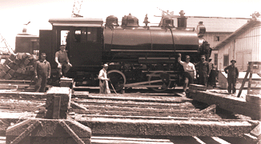

Same as Davenport #1868
Last updated: 10 September, 2025
| Builder: | ALCO, Rogers Works |
| Build #: | 53115 |
| Date: | 1914 |
| Engine #: | 32 |
| Railroad: | Los Angeles Harbor Department (LAHD) |
| Website: | www.laparks.org/traveltown traveltown.org |
| Email: | Travel.Town@lacity.org |
| Location: | Griffith Park, Travel Town, 5200 Zoo Dr, Los Angeles, CA 90027 |
| GPS: | 34.153791, -118.309056 Parking. |
| Phone: | 323-662-5874 |
| Status: | Display |
| Notes: | Donated: 1952 by the City of Los Angeles |
Subject to change: | |
| Hours: | Monday thru Friday 1000 to 1700 (10AM to 5PM) Weekends & Holidays 1000 to 1700 (10AM to 5PM) Closed Thanksgiving and Christmas 2 (The Museum Gift Shop closes at 4:45PM) |
| Admission: | Donations only. There is no parking/admission fee to visit Travel Town! 2 |
Brief history, See text for Davenport #1868.
| Class: | |
| Gauge: | 4'-8½" |
| F.M.Whyte: | 0-4-0T |
| Drivers: | 33” |
| Gear Ratio: | |
| Tractive Effort: | |
| Weight: | 19 tons |
| Weight on Drivers: | |
| Length: | |
| Boiler: | |
| Cylinders: | 10"x16” |
| Top Speed: | |
| Horsepower: | |
| Fuel: | |
| Fuel Type: | |
| Water: | |
| Steam psi: |